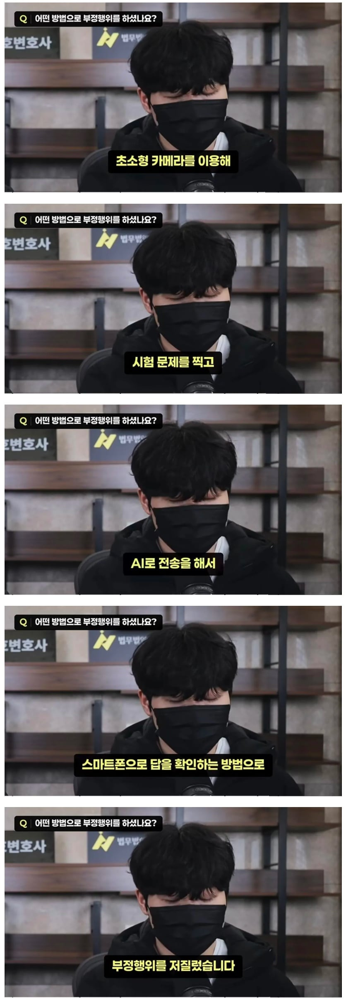
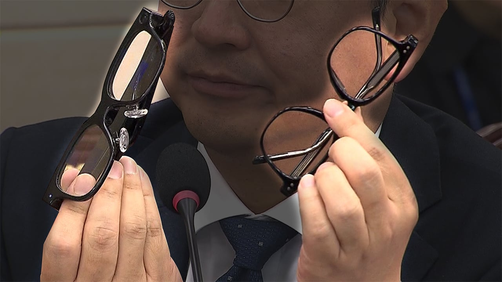
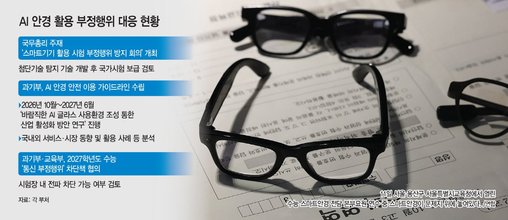
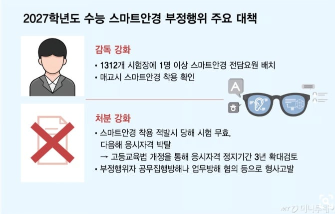

세무냥이가 자백하고 자기 범행 수법 안 밝혔더라면



여전히 ai 안경만 화제가 되서
ai안경만 막으면 된다고
안경 쓴 사람들 족치고 있었을듯

세무냥이가 자백하고 자기 범행 수법 안 밝혔더라면



여전히 ai 안경만 화제가 되서
ai안경만 막으면 된다고
안경 쓴 사람들 족치고 있었을듯
세무냥이가 열사다
그리고 수능 만점자 500명
ㅈㄴ 웃기겠네 ㅋㅋ
안경쓴놈은 죽어라
과연 단추가 끝일까 싶기도하네
이돈호가 사람 한명 목숨 살린거임
정공법으로 흙수저에서 변호사된 사람이라 미래를 내다볼 줄 아는건지
처음에 의뢰인 피해 최소화 해야지 유투브에 나와서 뭐하는거냐고
조회수에 미쳐서 변호사가 그러면 되냐고 욕먹었는데
이제와서 보니 혜안이였네 ㅎㄷㄷ
애당초 AI안경이 아직 워낙 눈에 띄는 물건인 상황에서 카메라 배터리 통신기 등을 다 따로 넣는 방식에 대해서도 논의가 있었고, 국내에서도 목걸이에 카메라 + 허벅지 진동기가 단속된 사례가 있음
게다가 해외에서는 치아, 속옷에 진동기, 단추 카메라, 마커펜 카메라 단속 사례가 있었음
세무냥이가 이슈를 대국민이슈급 체급으로 끌어올린 건 맞지만 세무냥이가 치팅아니었어도 리트냥이는 결국 사냥당했을 거임
원래도 수상하게 여긴 사람들이 있었고, 리트냥이가 시험지 공개한거 보고는 리트냥이 치팅했다고 확신한 사람 꽤 많았음
세무사 시험은 경험이 없기에 비교하기는 어렵지만 리트냥이의 백지 시험지 추리논증 만점 역시 탈인간의 영역이었으니까
이거 이슈화 안됐으면 수능때 안경 육안검사만 하고 아무도 안 잡혔을듯
존나 웃긴게 나도 그렇고 몇몇 개붕이들이 안경만 문제가 아니라 별의별 장치에 카메라 달고 그걸 ai한테 보내서 풀게 하는 방법도 있다 그랬는데 무슨 공상과학이야기하냐며 만들어보라고 비아냥 거리는 놈들 존나 많았음
리트냥이 국어 만점으로 꺼드럭대고 있을 듯.